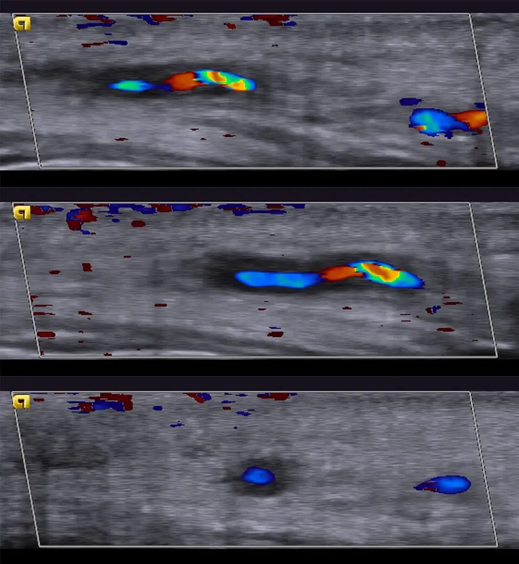

DX.5 — Maladies inflammatoires non infectieuses (cause de FUO)
Les sigles suivants sont définis ici.
- FUO correspond à fièvre d'origine inconnue ; CIM-11 correspond à Classification internationale des maladies, 11e révision ; ATC correspond à classification anatomique, thérapeutique et chimique.
- AIPS correspond à information professionnelle suisse des médicaments ; CRP correspond à protéine C réactive ; VS correspond à vitesse de sédimentation ; ACG correspond à artérite à cellules géantes.
- PPR correspond à pseudo-polyarthrite rhizomélique ; LES correspond à lupus érythémateux systémique ; MAS correspond à syndrome d'activation macrophagique ; AINS correspond à anti-inflammatoires non stéroïdiens.
- ACR correspond à Collège américain de rhumatologie ; EULAR correspond à Ligue européenne contre le rhumatisme ; TEP-TDM correspond à tomographie par émission de positons couplée au scanner.
- FDG correspond à fluorodésoxyglucose ; TDM correspond à tomodensitométrie ; IRM correspond à imagerie par résonance magnétique ; ANA correspond à anticorps antinucléaires ; ANCA correspond à anticorps anticytoplasme des polynucléaires neutrophiles.
- FR correspond à facteur rhumatoïde ; LDH correspond à lactate déshydrogénase ; ALAT correspond à alanine aminotransférase ; ASAT correspond à aspartate aminotransférase ; DFGe correspond à débit de filtration glomérulaire estimé.
- VIH correspond à virus de l'immunodéficience humaine ; AJIs correspond à arthrite juvénile idiopathique systémique ; SC correspond à sous-cutanée.
- IV correspond à intraveineuse ; IL-1 correspond à interleukine-1 ; IL-6 correspond à interleukine-6.
- TNF correspond à facteur de nécrose tumorale ; PGE2 correspond à prostaglandine E2 ; OFSP correspond à Office fédéral de la santé publique ; LAMal correspond à loi fédérale sur l'assurance-maladie.
- LAA correspond à loi fédérale sur l'assurance-accidents ; LAI correspond à loi fédérale sur l'assurance-invalidité ; TB correspond à tuberculose ; SI correspond à Système international d'unités.
- CFV correspond à Commission fédérale pour les vaccinations ; HBsAg correspond à antigène de surface du virus de l'hépatite B.
- OR correspond à rapport de cotes ; Se = sensibilité ; Sp = spécificité.
1. Définition
Une FUO dépasse 38,3 °C pendant plus de 3 semaines, sans diagnostic après un bilan standardisé1. Le protocole de Bleeker-Rovers (2007) exclut les patients immunodéprimés1. Les maladies inflammatoires non infectieuses en sont l'une des cinq causes. La fièvre vient d'une activation immunitaire sans microbe.
Le diagnostic reste une exclusion : le médecin écarte d'abord infection et cancer. Une maladie inflammatoire non infectieuse n'est donc une cause de FUO que lorsque le bilan la nomme.
2. Épidémiologie (Suisse, puis Europe)
Dans une cohorte néerlandaise prospective de 73 patients avec FUO (2003 à 2005), les maladies inflammatoires non infectieuses expliquent 22 % des cas1. En Suisse, l'article de Karrer (2017) indique 25 à 30 % dans les séries d'Europe centrale2. L'ACG exige 50 ans au moins et une perte visuelle soudaine ajoute 3 points aux critères4. Comme la FUO ne se dépiste pas, le protocole structuré limite les examens inutiles et le retard1.
| Groupe de causes et population | Part des cas de FUO | Source |
|---|---|---|
| Maladies inflammatoires non infectieuses : 73 patients avec FUO (> 3 semaines), hôpital universitaire et hôpitaux communautaires, Pays-Bas, 2003 à 20051 | 22 % | 1 |
| Infections : 73 patients avec FUO (> 3 semaines), hôpital universitaire et hôpitaux communautaires, Pays-Bas, 2003 à 20051 | 16 % | 1 |
| Néoplasies : 73 patients avec FUO (> 3 semaines), hôpital universitaire et hôpitaux communautaires, Pays-Bas, 2003 à 20051 | 7 % | 1 |
| Causes diverses : 73 patients avec FUO (> 3 semaines), hôpital universitaire et hôpitaux communautaires, Pays-Bas, 2003 à 20051 | 4 % | 1 |
| Sans cause trouvée : 73 patients avec FUO (> 3 semaines), hôpital universitaire et hôpitaux communautaires, Pays-Bas, 2003 à 20051 | 51 % | 1 |
| Maladies inflammatoires non infectieuses : séries d'Europe centrale citées, Suisse, 20172 | 25 à 30 % | 2 |
3. Physiopathologie
Cette section suit la cascade moléculaire → cellulaire → tissulaire → clinique.
Amorce (moléculaire). Un facteur déclenchant (infection, génétique, âge, cause inconnue) active l'immunité innée. Les macrophages et les neutrophiles libèrent l'IL-1, l'IL-6 et le TNF.
Développement (cellulaire). L'IL-1 agit sur l'hypothalamus : la PGE2 relève le point de consigne thermique et la fièvre apparaît. L'IL-6 active le foie : la CRP et la ferritine montent, l'hepcidine bloque le fer et l'anémie s'installe. Les plaquettes augmentent (thrombocytose).
Installation (tissulaire). Dans l'ACG, les cellules dendritiques de la paroi artérielle recrutent des lymphocytes T et des macrophages. La paroi s'épaissit et la lumière se rétrécit : l'ischémie provoque claudication de la mâchoire, céphalée et perte visuelle. Dans la maladie de Still, l'activation cytokinique provoque des pics fébriles, une éruption et une arthrite.
Maintien et clinique. Sans traitement, l'inflammation s'auto-entretient. L'ACG évolue vers la cécité ; la maladie de Still évolue parfois vers le MAS, avec ferritine très haute et cytopénies. Les corticoïdes freinent les cytokines ; un anticorps anti-récepteur de l'IL-6 corrige l'étape hépatique et la fièvre.
| Lésion ou perturbation | Exploration qui la montre | Thérapeutique qui la corrige (mécanisme) |
|---|---|---|
| Hausse d'IL-6 : fièvre, CRP, thrombocytose, anémie | CRP, VS, formule sanguine, ferritine | Actemra® : bloque le récepteur de l'IL-6 |
| Inflammation de la paroi artérielle (ACG) | Échographie des artères temporales (halo), biopsie4,5 | Prednisone : freine la transcription des cytokines |
| Activation innée avec arthrite (Still) | Ferritine, leucocytes, arthrite clinique3 | naproxène pour les formes légères ; corticoïdes ; méthotrexate d'épargne |
| Foyer inflammatoire occulte | TEP-TDM au FDG6 | Traitement de la maladie identifiée |
4. Démarche diagnostique
Le médecin suit le titre : prouver que la fièvre est inflammatoire non infectieuse, puis identifier la maladie. Il exclut d'abord les urgences, puis il applique un protocole par étapes1.
Étape 1 : écarter les drapeaux rouges. Chaque drapeau est cliquable ; sa fenêtre dit pourquoi il est rouge.
| Drapeau rouge | Diagnostic à exclure | Signe ou examen qui tranche | Piège |
|---|---|---|---|
| 🚩 Perte visuelle ou amaurose fugace après 50 ansL'ischémie du nerf optique est irréversible1. Elle impose les corticoïdes le jour même, sans attendre la biopsie. | ACG | CRP ≥ 10 mg/L ou VS ≥ 50 mm/h ; halo à l'échographie4 | Attendre la biopsie avant de traiter |
| 🚩 Fièvre avec hypotension ou frissonsLe sepsis ressemble à une poussée inflammatoire. Une infection non traitée tue en quelques heures. | Sepsis, endocardite | Hémocultures, lactate, échographie cardiaque | Conclure trop tôt à une maladie inflammatoire |
| 🚩 Cytopénies et ferritine très hauteCe tableau évoque le MAS. Il met la vie en jeu en quelques jours et exige une prise en charge hospitalière. | MAS, lymphome | Formule sanguine, ferritine, LDH, fibrinogène | Prendre un MAS pour une simple poussée de Still |
| 🚩 Déficit neurologique focal ou céphalée nouvelleUne vascularite du système nerveux ou une méningite donne ces signes. L'imagerie cérébrale et la ponction lombaire départagent. | Vascularite cérébrale, méningite | Imagerie cérébrale, ponction lombaire | Attribuer la céphalée à la fièvre |
| 🚩 Perte de poids, sueurs nocturnes, adénopathiesCes signes évoquent un lymphome, qui simule une maladie inflammatoire. La biopsie ganglionnaire tranche. | Lymphome, tuberculose | TEP-TDM, biopsie ganglionnaire | Débuter des corticoïdes avant la biopsie |
Étape 2 : sans drapeau rouge, suivre le protocole. Cinq étapes mènent au diagnostic1.
- Le médecin confirme la fièvre : plus de 38,3 °C à plusieurs reprises, plus de 3 semaines1.
- Il refait l'anamnèse et l'examen physique complets (points 5 et 6)1.
- Il fait les examens de base : CRP, VS, formule sanguine, LDH, ALAT, ASAT, hémocultures, analyse d'urine, radiographie du thorax (point 9.b).
- Il réalise l'imagerie : TEP-TDM au FDG si le bilan de base reste négatif, puis TDM thoraco-abdominale au besoin1,6.
- Il biopsie la cible : artère temporale après 55 ans, ganglion, moelle (point 9.d)1.
Une fièvre continue, de moins de 180 jours, avec CRP, VS ou LDH élevées, leucopénie ou thrombocytose prédit un diagnostic1.
5. Anamnèse ciblée et drapeaux rouges
Pour les maladies inflammatoires non infectieuses, la fenêtre Questions de l'anamnèse détaille chaque question, sa raison et la décision qu'elle change.
Drapeaux rouges actionnables. Le tableau relie chaque drapeau à sa signification et à l'action qu'il impose.
Pour les maladies inflammatoires non infectieuses, la fenêtre Drapeaux rouges rassemble le tableau détaillé.
6. Examen physique ciblé, région par région
Le médecin décrit d'abord le normal, puis le pathologique. La valeur de ces signes reste qualitative : ils orientent le diagnostic, et le bilan le confirme.
Pour les maladies inflammatoires non infectieuses, l'examen ciblé suit l'ordre ci-dessous, et chaque fenêtre donne le normal, le signe à rechercher, sa technique et son aspect. Les temps de l'examen sont : Constantes, Tête et cou, Bouche et gorge, Yeux, Peau, Cœur et vaisseaux, Abdomen et Articulations.
7. Approche syndromique
7.1 Syndrome inflammatoire systémique3.
| Signes fonctionnels | Signes physiques (geste de recherche) | Mécanisme |
|---|---|---|
| FièvreTempérature corporelle supérieure à 38 °C ; recherchée à l'interrogatoire puis mesurée., frissons, asthénieFatigue intense au repos, due à l'effet des cytokines sur le système nerveux., amaigrissementPerte de poids involontaire ; on pèse le patient et on compare au poids habituel3. | Thermomètre tympaniquePlacer la sonde dans le conduit auditif, tirer le pavillon vers l'arrière. Normal : moins de 38 °C3. Pathologique : plus de 38,3 °C à plusieurs reprises. ; adénopathies palpées par chaînePalper les chaînes cervicales, axillaires et inguinales avec la pulpe des doigts3. Normal : ganglion non palpable. Pathologique : ganglion dur ou plus gros que 1 cm3. | L'IL-1 et l'IL-6 élèvent le point de consigne thermique et activent le foie. |
| — | CRP, VS, plaquettes, hémoglobinePrise de sang : CRP et VS élevées, thrombocytose et anémie inflammatoire traduisent l'inflammation. | L'IL-6 stimule le foie ; l'hepcidine bloque le fer. |
7.2 Syndrome de Still3.
| Signes fonctionnels | Signes physiques (geste de recherche) | Mécanisme |
|---|---|---|
| Pics fébriles quotidiensFièvre qui monte une fois par jour puis revient à la normale ; relevée sur la courbe toutes les 4 heures., arthralgies, mal de gorgeDouleur pharyngée sans angine bactérienne ; critère mineur de Still3. Examiner la gorge à la lampe. | éruption rose saumon examinée pendant le picExaminer le tronc à la fièvre ; macules rose saumon fugaces. Normal : peau sans éruption. Pathologique : critère majeur. ; articulations palpées une à une ; adénopathies et rate palpées | Libération cyclique d'IL-1 et d'IL-6 par l'immunité innée. |
| — | Leucocytose, ferritine élevée, facteur rhumatoïde et anticorps antinucléaires négatifsPrise de sang : leucocytes élevés (critère majeur), facteur rhumatoïde et anticorps antinucléaires absents (critère mineur). | L'inflammation systémique n'implique pas d'auto-anticorps. |
7.3 Syndrome vasculaire crânien et polymyalgique (ACG, PPR)3.
| Signes fonctionnels | Signes physiques (geste de recherche) | Mécanisme |
|---|---|---|
| Céphalée temporale nouvelleDouleur récente de la tempe, apparue après 50 ans ; critère de l'ACG (+2 points)4. ; claudication de la mâchoireDouleur du masséter à la mastication, qui force à arrêter ; elle traduit l'ischémie musculaire. ; raideur matinale des épaules ; baisse visuelle | Artère temporale palpée, cuir chevelu effleuré, acuité visuelle testéePalper les artères devant l'oreille avec deux doigts : normale, souple et pulsatile ; pathologique, épaissie, douloureuse ou sans pouls. Tester l'acuité à chaque œil. | L'inflammation rétrécit la lumière artérielle ; l'ischémie atteint muscle et nerf optique. |
7.4 Syndrome d'activation macrophagique4.
| Signes fonctionnels | Signes physiques (geste de recherche) | Mécanisme |
|---|---|---|
| Fièvre persistante, asthénie intense, confusion | Rate palpée, purpura recherché, formule sanguine et ferritinePalper la rate en inspiration profonde ; chercher des pétéchies sur les jambes ; prise de sang pour cytopénies et ferritine très haute. | Les macrophages activés phagocytent les cellules sanguines et libèrent des cytokines. |
8. Diagnostic positif et critères
Le diagnostic de FUO exige plus de 3 semaines de fièvre supérieure à 38,3 °C, sans diagnostic après un bilan standardisé1. Le diagnostic de la maladie inflammatoire repose ensuite sur les critères de chaque entité.
| Critères majeurs | Critères mineurs |
|---|---|
| Fièvre ; arthralgie ; éruption typique ; leucocytose3 | Mal de gorge ; adénopathie ou splénomégalie ; anomalie hépatique ; facteur rhumatoïde et anticorps antinucléaires absents |
Cinq critères au moins, dont 2 majeurs, donnent une sensibilité de 96,2 % et une spécificité de 92,1 %3. Le tableau reste une exclusion : sans l'exclusion des infections et des cancers, ces critères ne suffisent pas.
| Critère de classification | Pondération |
|---|---|
| Âge de 50 ans ou plus : exigence absolue3 | condition obligatoire |
| Biopsie de l'artère temporale positive ou signe du halo à l'échographie | +5 points |
| VS ≥ 50 mm/h ou CRP ≥ 10 mg/L3 | +3 points |
| Perte visuelle soudaine | +3 points |
| Raideur matinale des épaules ou du cou ; claudication de la mâchoire ou de la langue ; céphalée temporale nouvelle ; sensibilité du cuir chevelu ; anomalie de l'artère temporale ; atteinte axillaire bilatérale ; activité de l'aorte au TEP-TDM | +2 points chacun |
Un score d'au moins 6 classe le patient comme atteint d'ACG4. Dans la cohorte de validation, la sensibilité est de 87,0 % et la spécificité de 94,8 %4. Ces critères servent à la recherche : ils ne remplacent pas le jugement clinique.
9. Examens complémentaires
9.a Gold standard. La FUO n'a pas de gold standard unique13. Le protocole structuré de 2007, centré sur la TEP-TDM au FDG, reste la référence de la démarche1,6. Pour l'ACG, la biopsie de l'artère temporale et l'échographie sont les examens de confirmation ; la maladie de Still est un diagnostic clinique d'exclusion3,4.
9.b Première intention.
Pour les maladies inflammatoires non infectieuses, chaque examen du tableau « Examens de base : résultat, signification, conduite » ouvre une fenêtre, qui précise les valeurs, l'interprétation et les pièges. Les examens concernés sont : CRP, VS (une fois, au début) ; Formule sanguine, LDH, ferritine ; ALAT, ASAT, créatinine, analyse d'urine et Hémocultures, VIH. Viennent ensuite ANA, ANCA, facteur rhumatoïde et Scanner thoraco-abdominal.
Les valeurs de référence en unités SI dépendent du laboratoire : le médecin utilise celles de son institut. Les chiffres sourcés sont CRP ≥ 10 mg/L et VS ≥ 50 mm/h pour l'ACG4.
9.c Alternatives.
Pour les maladies inflammatoires non infectieuses, la fenêtre Examens de remplacement rassemble le tableau détaillé.
La fenêtre Échographie duplex d'une artère temporale : signe du halo montre le cliché brut, puis sa copie annotée et sa lecture guidée.
9.d Deuxième intention. Le médecin recourt à la biopsie de l'artère temporale chez le patient de 55 ans ou plus1. Il y ajoute une biopsie ganglionnaire ou de moelle si le bilan suggère un lymphome. Après un bilan négatif, un second avis dans un centre d'expertise est possible6. Cas discordant : si l'échographie et la biopsie sont négatives mais la clinique forte, le diagnostic reste possible ; le rhumatologue décide.
10. Arbre décisionnel
- Si le patient a une perte visuelle ou une céphalée nouvelle après 50 ans, le médecin donne la prednisone le jour même1. Il organise l'échographie ou la biopsie dans la semaine et demande l'avis ophtalmologique16.
- Si la fièvre s'accompagne d'hypotension, de frissons ou d'un foyer, le médecin prélève des hémocultures, débute l'antibiothérapie et exclut l'infection.
- Si le bilan montre des cytopénies et une ferritine très haute, le médecin hospitalise le patient et suspecte un MAS.
- Si la fièvre dure plus de 3 semaines sans signe de gravité, le médecin fait le bilan de base (9.b), puis une TEP-TDM au FDG, puis une TDM au besoin1.
- Si le patient a des pics quotidiens, une éruption fugace et une arthralgie, et si l'infection et le cancer sont écartés, le médecin applique les critères de Still3.
- Si la TEP-TDM et le bilan restent négatifs, le médecin organise un suivi et peut demander un second avis6.
11. Prise en charge selon les recommandations suisses
11.A But thérapeutique.
Le but est la disparition de la fièvre et la normalisation de la CRP, sans cécité ni séquelle. Dans l'ACG, le but chiffré est la rémission durable à la semaine 5210. Elle atteint 56 % sous tocilizumab 162 mg par semaine avec 26 semaines de prednisone dégressive, contre 14 % sous placebo avec le même schéma de prednisone10. Les doses de corticoïdes descendent à la plus basse dose efficace, sous le seuil de Cushing (5 à 7,5 mg/jour de prednisone) à long terme7.
11.B Moyens.
Les doses viennent de l'AIPS de chaque molécule. Une dose tirée d'une recommandation porte la mention « hors AIPS », et le texte cite la recommandation lue avec l'AIPS de la molécule.
Urgence chronologique.
- Devant une suspicion d'ACG avec perte visuelle, le médecin débute la corticothérapie immédiatement, sans attendre la biopsie, hospitalise le patient et demande l'avis ophtalmologique le jour même.
- Pour la perte visuelle, la recommandation EULAR 2018 propose 250 à 1000 mg/jour de méthylprednisolone intraveineuse pendant 3 jours au plus (hors AIPS)89. Le spécialiste en rhumatologie et en ophtalmologie doit valider cette dose avant la prescription. L'AIPS de Solu-Medrol® autorise la voie intraveineuse et donne une dose initiale de 10 à 500 mg selon la maladie9.
- Le relais oral par Prednisone est de 40 à 60 mg/jour dans l'ACG selon la recommandation EULAR 2018 (hors AIPS)87. Cette dose reste dans la fourchette AIPS de 5 à 60 mg/jour7. Le spécialiste en rhumatologie doit la valider avant la prescription.
- Le médecin prélève les hémocultures, la CRP et la formule sanguine avant la première dose, mais ne retarde pas le traitement.
- Il organise l'échographie ou la biopsie dans les jours qui suivent5.
- Si un MAS est suspecté, il hospitalise le patient en soins intensifs et demande l'avis de l'hématologue et du rhumatologue.
Hors urgence.
- Mesures générales : le médecin traite d'abord toute infection, limite les antipyrétiques avant le bilan pour garder la courbe de température et hydrate le patient.
- Le médecin choisit la molécule selon la maladie :
- Dans un Still léger, le naproxène est dosé à 1000 mg/jour en poussée et à 500 à 1000 mg/jour en entretien12. Ses indications AIPS sont les maladies rhumatismales sans citer la maladie de Still12.
- La prednisone est dosée à 15 à 30 mg/jour dans les affections chroniques à pronostic réservé, puis la dose descend vite jusqu'à l'entretien7.
- Pour épargner les corticoïdes, le méthotrexate est débuté à 7,5 mg SC une fois par semaine dans la polyarthrite rhumatoïde selon l'AIPS11. Son usage dans la maladie de Still sort de l'AIPS et relève du rhumatologue.
- Dans l'ACG, l'Actemra® est administré à 162 mg SC toutes les 2 semaines avec un schéma dégressif de corticoïdes10. Les corticoïdes restent le traitement immédiat de la perte visuelle, et l'usage dans la maladie de Still de l'adulte sort de l'AIPS10.
- Non pharmacologique : le médecin conseille une activité physique adaptée, le calcium et la vitamine D, une alimentation équilibrée et l'arrêt du tabac.
- Situations spéciales : le tableau ci-dessous les résume.
Le tableau suivant réunit les cinq molécules avec leur dose, leur voie, leur durée et leur contre-indication majeure.
| Molécule ® (n° Swissmedic) | Dose AIPS | Voie | Durée | Contre-indication majeure |
|---|---|---|---|---|
| Prednison Galepharm (69640) | Dose initiale de 5 à 60 mg/jour ; 15 à 30 mg/jour dans les affections chroniques à pronostic réservé7 | Orale | Au-delà de 8 à 10 jours, arrêt par paliers lents7 | Hypersensibilité à la prednisone ou à un composant7 |
| Solu-Medrol® (35112) | Dose initiale de 10 à 500 mg selon la maladie ; 250 mg/jour ou plus en perfusion intermittente9 | Intraveineuse | Quelques jours, en règle générale 5 jours au plus9 | Mycoses systémiques ; voie intrathécale ou épidurale ; hypersensibilité9 |
| Naproxen-Mepha (51480) | 1000 mg/jour en dose d'attaque ou en poussée ; 500 à 1000 mg/jour en entretien12 | Orale, au repas | La plus courte possible chez le sujet âgé12 | Ulcère ou hémorragie digestive ; maladie inflammatoire de l'intestin ; insuffisance rénale sévère ; troisième trimestre12 |
| Methotrexat-Mepha rheuma/derm (65510) | 7,5 mg une fois par semaine, paliers de 2,5 mg, maximum habituel 25 mg par semaine11 | Sous-cutanée | Effet après 4 à 8 semaines11 | Grossesse ; allaitement ; clairance de la créatinine inférieure à 30 mL/min11 |
| Actemra® (58868001) | Dans l'ACG, 162 mg toutes les 2 semaines ; 162 mg chaque semaine en cas de récidive10 | Sous-cutanée | Au-delà de 52 semaines selon la clinique10 | Hypersensibilité ; association aux anti-TNF10 |
| Situation | Conduite |
|---|---|
| Grossesse | Méthotrexate contre-indiqué ; contraception 6 mois après l'arrêt chez la femme et au moins 3 mois chez l'homme11. Prednisone : effet tératogène chez l'animal, pas d'étude contrôlée chez la femme enceinte ; informer vite la patiente7. Tocilizumab seulement si indispensable10. Naproxène contre-indiqué au troisième trimestre12. |
| Allaitement | Tocilizumab : interrompre l'allaitement si le traitement est indispensable. Méthotrexate : arrêter l'allaitement avant le traitement et ne pas allaiter pendant le traitement. Prednisone : ne pas allaiter pendant l'usage systémique. Naproxène : ne pas le prendre pendant l'allaitement. |
| Insuffisance rénale | Méthotrexate : 50 % de la dose si DFGe 30 à 59 mL/min, non indiqué si < 30 mL/min. Naproxène déconseillé si DFGe < 30 mL/min. |
| Insuffisance hépatique | Naproxène contre-indiqué en cas d'insuffisance sévère. |
| Sujet âgé | Naproxène : dose la plus faible, durée la plus courte. Risque digestif et osseux élevé. |
| Enfant | Tocilizumab dans l'AJIs ; dose selon le poids (AIPS). |
Social et professionnel
Le médecin établit l'arrêt de travail selon la maladie et la fatigue. La LAMal rembourse les soins, et la LAI intervient en cas d'atteinte durable. Le patient s'abstient de conduire en cas de trouble visuel.
11.C Surveillance.
Le médecin contrôle la CRP et la VS à chaque consultation. Sous tocilizumab, la CRP et la VS baissent vite par blocage de l'interleukine-6 : elles ne reflètent plus l'activité de l'ACG, donc le médecin se fie à la clinique10. Il contrôle alors ALAT et ASAT toutes les 4 à 8 semaines pendant 6 mois, puis toutes les 12 semaines10, et il dépiste la tuberculose latente avant le traitement. Sous méthotrexate, il contrôle la formule sanguine au moins chaque mois pendant 6 mois, puis tous les 3 mois11. Une chute nette des leucocytes ou des plaquettes impose l'arrêt immédiat11. Sous prednisone au long cours, il surveille la tension, la glycémie et le poids7, et il évalue la densité osseuse.
11.D Pronostic et sortie.
Le pronostic dépend de la maladie. La rémission se juge sur la fièvre, la CRP et la clinique. La sortie d'hospitalisation exige l'apyrexie, une CRP en baisse, un schéma de corticoïdes et un rendez-vous de contrôle.
12. Prévention
Primaire. Aucune mesure ne prévient la plupart de ces maladies. Avant une immunosuppression, le médecin vaccine : l'AIPS déconseille de vacciner sous corticothérapie et recommande de vacciner avant7. Le plan suisse de vaccination de l'OFSP et de la CFV reste applicable à ces patients avant l'immunosuppression.
Secondaire. Le médecin reconnaît tôt l'ACG chez le patient de plus de 50 ans et traite vite pour éviter la cécité4. Il applique le protocole structuré pour éviter les examens inutiles1.
Tertiaire. Le médecin protège l'os (calcium, vitamine D), dépiste la tuberculose avant le tocilizumab et prescrit une contraception pendant et après le méthotrexate. Ces gestes réduisent les effets des traitements prolongés.
13. Points clés
La FUO dure plus de 3 semaines, dépasse 38,3 °C et résiste à un bilan standardisé1.
Les maladies inflammatoires non infectieuses expliquent 22 % des FUO néerlandaises et 25 à 30 % des séries d'Europe centrale citées12.
Le médecin traite l'ACG suspectée le jour même et ne retarde pas les corticoïdes pour la biopsie.
La maladie de Still se pose par exclusion : 5 critères dont 2 majeurs, après avoir écarté l'infection et le cancer3.
Le méthotrexate se prend une fois par semaine ; il est contre-indiqué pendant la grossesse.
14. Pièges et questions fréquentes à l'examen fédéral suisse
Question 1. Un patient âgé a une céphalée temporale et un trouble visuel : attendre la biopsie ?
Réponse : Non : les corticoïdes partent le jour même, car la perte visuelle est irréversible8.
Question 2. Quels seuils de CRP et de VS retient la classification de l'ACG ?
Réponse : CRP ≥ 10 mg/L ou VS ≥ 50 mm/h, avec 3 points4.
Question 3. Quels critères suffisent à classer la maladie de Still ?
Réponse : Cinq critères dont 2 majeurs ; ils ne suffisent pas sans exclusion de l'infection et du cancer3.
Question 4. À quel rythme se prend le méthotrexate en rhumatologie ?
Réponse : Une fois par semaine, 7,5 mg au début, maximum habituel 25 mg par semaine (AIPS)11.
Question 5. Quel examen d'imagerie vient en premier si l'ACG est suspectée ?
Réponse : L'échographie des artères temporales et axillaires5.
Question 6. Quelle part des FUO provient d'une maladie inflammatoire ?
Réponse : 22 % aux Pays-Bas1 ; 25 à 30 % dans les séries d'Europe centrale2.
Sources bibliographiques
Questions de l'anamnèse
| Question | Pourquoi elle change la décision |
|---|---|
| Quel est le profil de la fièvre ?Pics quotidiens avec retour à la normale évoquent la maladie de Still. Une fièvre continue prédit un diagnostic dans la FUO. | Le pic vient de la libération cyclique de cytokines. Il oriente vers Still. |
| Avez-vous une céphalée nouvelleDouleur de la tempe apparue récemment, après 50 ans ; elle évoque l'ACG., une douleur du cuir chevelu ou de la mâchoire à la mastication 1? | L'artère temporale et l'artère maxillaire sont inflammatoires. La claudication de la mâchoire compte +2 points4. |
| Y a-t-il une raideur matinaleRaideur des épaules ou du cou au réveil, qui dure plus de 30 minutes ; elle évoque la PPR. des épaules ou du cou 4? | La bursite et la synovite de la PPR causent cette raideur. Elle compte +2 points pour l'ACG4. |
| Y a-t-il une éruption fugaceMacules rose saumon qui apparaissent avec la fièvre et disparaissent ensuite., une gorge douloureuse, des arthralgies ? | Ce sont des signes de la maladie de Still3. |
| Quels médicaments, voyages, contacts animauxUne fièvre médicamenteuse, un paludisme ou une zoonose sont des causes à traiter autrement ; elles passent avant une maladie inflammatoire., antécédents ? | Une cause infectieuse ou médicamenteuse se traite autrement. Le voyage oriente vers le paludisme (DX.6)3. |
| Y a-t-il une diarrhée, des aphtes, un érythème noueuxSignes digestifs et cutanés des maladies inflammatoires de l'intestin et de la sarcoïdose. ? | Ces signes évoquent une maladie inflammatoire de l'intestin ou une sarcoïdose. |
| Une perte de poids, des sueurs nocturnesSignes B d'un lymphome : la tumeur libère des cytokines. ? | Un lymphome simule une maladie inflammatoire. |
Drapeaux rouges
| Drapeau rouge | Signification | Action immédiate |
|---|---|---|
| Perte visuelle soudaine après 50 ans4 | Ischémie du nerf optique par ACG, irréversible | Corticoïdes le jour même, avis ophtalmologique |
| Fièvre, cytopénies et ferritine très haute | Syndrome d'activation macrophagique | Hospitalisation |
| Fièvre, hypotension ou frissons | Sepsis ou endocardite possibles | Hémocultures et antibiothérapie empirique avant de conclure |
Constantes
Tête et cou
| Normal | Artères temporales souples, pulsatiles, indolores ; cuir chevelu indolore. |
|---|---|
| Signes à rechercher (cliquer) | Palpation de l'artère temporaleTechnique : palper les deux artères devant l'oreille avec la pulpe de deux doigts. Valeur : une artère épaissie, douloureuse ou sans pouls compte +2 points dans l'ACG4. Piège : un examen normal n'exclut pas l'ACG. · Sensibilité du cuir cheveluTechnique : effleurer le cuir chevelu avec le plat de la main. Valeur : la douleur évoque l'ACG ; elle compte +2 points. Piège : elle manque chez beaucoup de patients. · Claudication de la mâchoireClaudication de la mâchoire : douleur du masséter pendant la mastication, qui force à arrêter. Elle traduit l'ischémie musculaire. Elle compte +2 points. : demander au patient de mâcher une pomme4. |
Bouche et gorge
| Normal | Muqueuse rose, humide, sans aphte. |
|---|---|
| Signes à rechercher (cliquer) | Pharyngite et adénopathieTechnique : examiner la gorge à la lampe ; palper les chaînes cervicales. Valeur : le mal de gorge et l'adénopathie sont des critères mineurs de Still3. Piège : la pharyngite virale ressemble au début de Still. |
Yeux
| Normal | Acuité visuelle normale, fond d'œil normal. |
|---|---|
| Signes à rechercher (cliquer) | Acuité visuelle et champ visuel au doigt ; fond d'œil si perte visuelle (urgence ACG). |
Peau
| Normal | Peau sans éruption, sans érythème noueux. |
|---|---|
| Signes à rechercher (cliquer) | Éruption de StillTechnique : examiner le tronc et la racine des membres pendant le pic fébrile. Valeur : macules rose saumon fugaces ; critère majeur de Still. Piège : l'éruption disparaît entre les accès : l'examiner à la fièvre. · Érythème noueux (nodules rouges douloureux des jambes). |
Cœur et vaisseaux
| Normal | Pouls symétriques ; tensions égales aux deux bras ; pas de souffle. |
|---|---|
| Signes à rechercher (cliquer) | Pouls et pressions aux deux brasTechnique : palper les pouls radiaux et mesurer la pression à chaque bras. Valeur : une asymétrie évoque une vascularite des gros vaisseaux (Takayasu, ACG). Piège : un souffle cardiaque nouveau évoque l'endocardite. |
Articulations
| Normal | Articulations indolores, mobiles, sans gonflement. |
|---|---|
| Signes à rechercher (cliquer) | SynoviteTechnique : palper chaque articulation pour chercher gonflement, chaleur, épanchement. Valeur : l'arthrite ou l'arthralgie de plus de 2 semaines est un critère majeur de Still. Piège : l'arthrite de Still disparaît parfois à l'examen. · Mobilisation des ceintures scapulaire et pelvienne (PPR)3. |
Échographie duplex d'une artère temporale : signe du halo
Échographie duplex d'une artère temporale : signe du halo. échographie duplex couleur, coupes longitudinales (haut et milieu) et transversale (bas) de l'artère temporale

Lisez d'abord seul ce cliché (échographie duplex d'une artère temporale : signe du halo) : cherchez vous-même le signe.
La copie annotée (échographie duplex d'une artère temporale : signe du halo) numérote les repères décrits ci-dessous.
- Le halo est une bande hypoéchogène autour de la lumière colorée, et la paroi est épaissie
- La lumière perfusée est rétrécie et entourée du halo
- En coupe transversale, le halo est un anneau sombre autour du vaisseau
- Un halo absent n’exclut pas l’ACG, car la biopsie reste possible
- Le halo dépend de l’opérateur
Ce que l'image décide. Si le halo est présent avec une clinique évocatrice, le médecin donne les corticoïdes sans attendre la biopsie

Formule sanguine, LDH, ferritine
| Résultat → signification | Thrombocytose, leucopénie, LDH élevée : prédicteurs d'un diagnostic. Ferritine très haute : Still ou MAS. |
|---|---|
| Conduite | Cytopénies avec ferritine très haute : hospitaliser. |
Hémocultures, VIH
| Résultat → signification | Positives : infection. |
|---|---|
| Conduite | Traiter l'infection ; revoir le diagnostic. |
ANA, ANCA, facteur rhumatoïde
| Résultat → signification | Positifs : connectivite ou vascularite. Négatifs avec Still probable : critère mineur. |
|---|---|
| Conduite | Avis du rhumatologue. |
Examens de remplacement
| Situation | Examen | Limite |
|---|---|---|
| ACG suspectée | Échographie des artères temporales et axillaires, en première intention5 | Dépend de l'opérateur |
| Échographie non concluante | TEP-TDM au FDG ou IRM des artères crâniennes et extracrâniennes | Disponibilité |
| Grossesse | Échographie ou IRM sans injection ; éviter les rayons X sauf nécessité | La TEP-TDM expose le fœtus |
| DFGe < 30 mL/min ou allergie aux produits iodés5 | Échographie ou IRM ; TEP-TDM sans iode | Éviter le scanner avec contraste iodé |
| Dispositif implanté non compatible IRM | Échographie ou TEP-TDM | IRM contre-indiquée |